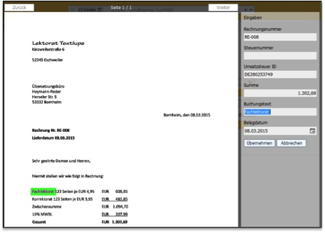
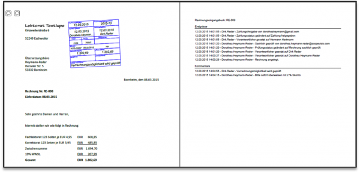

Beleglose Buchhaltung mit Scopevisio
Im Rahmen des papierlosen Büros lebe und vermittle ich auch die Beleglose Buchhaltung. Beide Themen sind untrennbar an die Digitalisierung von Prozessen gebunden. Um mich dem Thema anzunähern, habe ich mich letztes Jahr gleich mit der großen Lösung: Datev und Unternehmen online beschäftigt. Das funktioniert und erfüllt alle gesetzlichen Anforderungen, aber inzwischen kann ich klar sagen, es macht nicht immer Spaß und man muss das schon unbedingt wollen, um die Umständlichkeiten und Einschränkungen mit der Datev zu überstehen. Daher halte ich für meine Kunden, aber inzwischen auch für mich selbst wieder alle Augen nach anderen Tools offen, die
- betriebssystem- und deviceunabhängig nutzbar sind
- cloudbasiert
- dem Anwender einen echten Mehrwert bieten: z.B. Darstellung eines buchhalterischen Freigabe-Workflows oder tagesaktuelle betriebswirtschaftliche Auswertungen
- eine revisionssichere Ablage gewährleisten, so dass man eine beleglose Buchhaltung bis hin zum sog. ersetzenden Scannen (Papierbelege nach dem Scannen wegwerfen) umsetzen kann
- dem Nutzer den Einstieg leicht machen (wozu auch ein zeitgemäßes ansprechendes Design auf allen Geräten gehört)
- skalierbar sind, d.h. man kann mit einem kleinen Paket starten und bei Bedarf und Gefallen ausdehnen
- die eine einfache und sicher Datenübertragung an den Steuerberater gewährleisten
- unterstützen, die rechtlichen Anforderungen an eine beleglose Buchhaltung zu erfüllen
- nicht zuletzt muss das Verhältnis Sicherheit und einfache Anwendung stimmen
Es gibt zahlreiche Anbieter von Onlinebuchhaltungssoftware. Eine Lösung, die ich gerade selbst ausprobiere, weil sie in der Tat alle oben genannten Anforderungen erfüllt, ist Scopevisio.
Scopevisio kann zu einer umfassenden Unternehmenssoftware heranwachsen, aber für den Einstieg beschäftige ich mich erst mal nur mit dem Bereich Buchhaltung.
Einrichtung Scopevisio
Scopevisio war schnell eingerichtet, sowohl auf dem Mac, als auch unter Windows (VMware auf dem Mac). Die Anwendung auf den Endgeräten ist praktisch eine App. Reicht ja auch, da alle Daten in der Cloud liegen. Für echte Kollaboration mit externen Mitarbeitern und dem Steuerberater ist das perfekt. Obwohl mir Scopevisio bisher ausgesprochen gut gefällt, ist die reine Cloudbasiertheit ein Punkt, der mich am Anfang kurz unsicher gemacht hat.
Ich mache ja gerade unterwegs immer wieder die Erfahrung, dass die Verfügbarkeit des Internets sehr unterschiedlich ist. Und am Anfang dachte ich tatsächlich: „hm, keine Buchhaltung unterwegs, wann immer und wo immer ich es will?“ Aber bei genauerem Hinsehen war schnell klar: unterwegs habe ich praktisch noch nie Buchhaltung erledigt oder vorbereitet und schließlich kann ich die Vorbereitung ja auch in einem Ordner außerhalb von Scopvisio erledigen und später mit einem Klick hochladen. Außerdem: einen kleinen Tod stirbt man ja immer und ins Verhältnis gesetzt, ist dieser für mich wirklich klein. Natürlich auch unter dem Gesichtspunkt, dass die Internetverfügbarkeit und Geschwindigkeit immer und überall eher besser als schlechter wird.
Praktische Anwendung von Scopevisio
Buchhaltung mit Scopevisio funktioniert vollständig digital. Eingehende Papierrechnungen können direkt vom Scanner ins System gesendet werden; bereits digitalisierte Rechnungen werden mit Drag&Drop oder per Ordnersynchronisation importiert. Die Software integriert den gesamten buchhalterischen Hauptprozess im Unternehmen. Das bedeutet eine enorme Zeitersparnis weil:
- das Hin- und Herreichen von Rechnungen im Unternehmen wegfällt
- Suchzeiten praktisch nicht mehr anfallen, da alle Berechtigten zu jeder Zeit Zugriff auf die Daten haben
- dank OCR-Volltexterkennung die Erfassung und Verbuchung sehr schnell geht
- überhaupt keine Zeit mehr für „Ablage“ aufgewendet werden muss
Einbringung der Rechnungen ins System
Ausgangsrechnungen sind praktisch ein Selbstgänger, da man diese ganz einfach im System erzeugen kann (siehe unten unter Workflow) Eingangsrechnungen und Kassenbelege werden eingescannt, per Drag&Drop importiert, aus einem Ordner hochladen oder per E-Mail ins System gebracht. Ich muss sagen, für meinen Geschmack geht es derzeit nicht einfacher. Ich bevorzuge das Hochladen aus einem Ordner. Das passt am besten zu meinem Buchhaltungsprozess: den Monat über:
- an zentraler Stelle elektronisch und/oder in Papier sammeln
- anhand einer Checkliste restliche Onlinerechnungen herunterladen
- einmal am Monatsende scannen
Für meine Zwecke genügt das, aber größere Unternehmen sollten insbesondere im Hinblick auch auf die neuen GoBD, die seit 1. Januar gelten und bei denen der zeitnahen Verarbeitung noch mehr Gewicht eingeräumt wird, eine andere Taktung anwenden.
Texterkennung mit Scopevisio
Sobald eine Rechnung im System ist, übernimmt die leistungsfähige OCR Erkennung. Viele Belegdaten brauchen nicht erfasst zu werden, da sie bereits automatisch in die entsprechenden Eingabefelder übernommen werden. Was nicht erkannt wurde, wird einfach mit der Maus markiert – fertig. Kein Eintippen ist mehr nötig.
Abb. 1 – Volltexterkennung von Belegen mit Scopevisio

Workflows inklusive
Ich erlebe viele mittelständische Unternehmen, die sich schon gern auf das Thema digitale Buchhaltung einlassen wollen, aber zögern, weil sie nicht wissen, wie sie den bisherigen Workflow der Ausgangs- und Eingangsrechnungen darstellen können. Scopevisio macht es einem da sehr leicht und es können genau definierte Prozesse angelegt werden. Natürlich muss man genau wissen, wie die Prozesse aussehen sollen und das erste Einrichten dieser Workflows ist nicht in zwei Minuten erledigt. Aber sich über den Prozess und die damit verbundenen Zugangsrechte genau Gedanken zu machen lohnt sich unbedingt, denn hier liegt sehr viel Potential für Standardisierung und Automatisierung, was eine Menge Zeit spart.
Wenn man sich für mehr Tools entscheidet kann auch der gesamte Belegfluss durch das Unternehmen definiert und automatisiert werden.
- Im Bereich Abrechnung beginnt der Weg mit einer Verkaufschance, die ein mögliches Geschäft dokumentiert.
- Nach Annahme des Angebots wird dieses mit einem Mausklick zu einem Auftrag.
- Im Anschluss an die Lieferung wird aus dem Auftrag eine Rechnung.
- Diese kann nicht nur direkt aus dem System heraus versendet werden, sondern fließt auch in das Buchhaltungssystem ein, wo sie vorkontiert und in die Offene-Posten-Liste übernommen wird.
- Packzettel, Lieferscheine, alles Nötige wird aus den einmal eingegebenen Daten generiert
Natürlich ist es unterwegs jederzeit möglich, die Daten für den Folgebeleg zu aktualisieren, etwa, wenn der Kunde eine andere Stückzahl bestellt als im Angebot oder wenn nachträglich ein Rabatt ausgehandelt wurde. Nichts wird doppelt erfasst.
Das ist keine Besonderheit von Scopevisio, andere Programme können das auch, aber die Einfachheit in Kombination mit den o.g. Merkmalen insbesondere der Möglichkeit des kleinen Einsteiges finde ich gut.
Ein integrierter Workflow für die Bearbeitung von Eingangsrechnungen ermöglicht es, die Rechnungsbearbeitung nach dem Vier-Augen-Prinzip im System festzuschreiben. Die zuständigen Bearbeiter für die Prüfung, Freigabe und Buchung von Rechnungen werden benannt und die Arbeitsschritte direkt am Beleg dokumentiert. Ein digitaler Eingangsstempel macht alle diese Schritte sichtbar.

Den digtialen Eingangsstempel finde ich besonders gelungen, weil er den Buchhaltungsmitarbeitern die Umstellung sehr vereinfacht. Scheint banal, aber ist in der Praxis enorm wichtig. Ich bestätige mit einem Mausklick eine Freigabe und auf dem digitalen Stempel wird alles Nötige übersichtlich angezeigt.
Buchungsregeln für Kontoauszüge und Eingangsrechnungen
Für die üblichen Buchungen werden im System Buchungsregeln hinterlegt, die wiederkehrende Kontobewegungen automatisch vorkontieren. Der Buchhalter sieht seine Routinebuchungen nur noch durch und schreibt sie im System fest. Dazu gehört natürlich auch, dass Bankbewegungen über eine Online-Banking-Schnittstelle direkt ins System geladen. Regeln einzurichten und zu buchen überlasse ich vollständig meinem Buchhaltungs- und Steuerbüro, die die App kostenlos nutzen können. Insgesamt bringt Scopevisio auch auf Steuerberaterseite eine deutliche Zeitersparnis mit sich, die Freiraum für andere Aufgaben schafft, z.B. den Mandanten tatsächlich zu beraten, anstatt „nur“ die Buchhaltung zu erledigen.
Rechtssicherheit/Compliancevorschriften einhalten
Wer eine papierlose Buchhaltung praktiziert, muss bei der Digitalisierung und Verarbeitung von Belegen bestimmte Steuerrechtliche- und Compliance Vorschriften einhalten. Scopevisio unterstützt, diese Anforderungen zu erfüllen.
Digitalisierte Belege werden mit einer vollständigen Änderungshistorie und einem PDF-Protokoll gespeichert, das sämtliche Bearbeitungsschritte inklusive den handelnden Personen, Zeitpunkten, Kommentaren usw. dokumentiert. Die Verfahrensdokumentation, die für die digitale Belegverarbeitung eine Compliance-Vorschrift darstellt, wird systemseitig ganz automatisch erstellt. Übrigens beherrscht Scopevisio auch das ZUGFeRD-Format für fälschungssichere digitale Belege.
Weitere Artikel

Datev Unternehmen Online auf Macbook
Endlich: Datev Unternehmen Online auf meinem Macbook! Das Ergebnis zählt: mit ein bisschen Aufwand läuft nun von der Datev Unternehmen Online auf Mac Air 11“ unter Windows 7 über VMWare Fusion. Unternehmen online ist für mich …

Endlich beleglose Buchhaltung möglich
Hurra: Endlich beleglose Buchhaltung umgesetzt! Seit ein paar Wochen, ja man kann fast sagen Monaten, treibt uns das Thema um. Jetzt freuen wir uns über die Ergebnisse: Aber ich muss einräumen, die Umstellung hat uns viel Zeit …